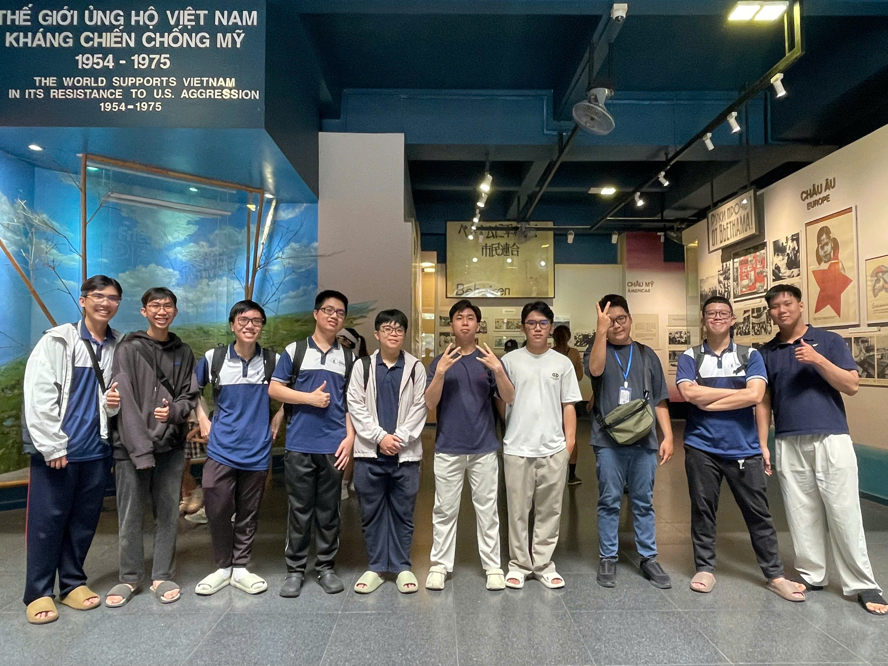

Học phần Lịch sử Đảng Cộng sản Việt Nam 1954 – 1975
Từ đường lối
đến thực tiễn
Sự lãnh đạo của Đảng trong kháng chiến chống Mỹ, cứu nước – 21 năm, 5 giai đoạn, kể lại bằng những mốc cốt lõi và chứng tích tại Bảo tàng Chứng tích Chiến tranh.
21 · 7 · 1954
Vĩ tuyến 17 – sông Bến Hải
Một dải đất, hai miền.
Bao giờ nối liền?
30 · 4 · 1975 — 11 giờ 30
Non sông
thu về một mối
Khe vĩ tuyến 17 khép lại sau 21 năm: kết thúc kháng chiến chống Mỹ, cứu nước, mở ra kỷ nguyên độc lập, thống nhất, cả nước đi lên chủ nghĩa xã hội.
- 21
- năm kháng chiến
- 5
- giai đoạn lãnh đạo
- 3
- chiến lược chiến tranh của Mỹ bị đánh bại
Bốn nguyên nhân thắng lợi
Chứng tích Lịch sử tại Bảo tàng Chứng tích Chiến tranh
Tổng hợp hình ảnh hiện vật, chứng tích và tài liệu khảo sát tại số 28 Võ Văn Tần, Phường Võ Thị Sáu, Quận 3, TP.HCM.
Ôn tập tương tác 1954 – 1975
Trắc nghiệm kiến thức Lịch sử Đảng
Ôn lại các nghị quyết và sự kiện lịch sử. Chọn một đáp án cho mỗi câu để xem lời giải thích.
Câu hỏi đang tải...
Hoàn thành bài ôn tập!
Phản hồi kết quả...
Nhóm 03 Lớp 23C02
Nhóm tác giả
Nhóm sinh viên thực hiện đề tài học phần Lịch sử Đảng Cộng sản Việt Nam tại Trường Đại học Khoa học Tự nhiên, ĐHQG-HCM.

Cảm nghĩ tập thể
Khi học về các mốc lịch sử trên ghế nhà trường, chúng mình chưa hình dung hết sự tàn khốc của chiến tranh. Chỉ khi đối chiếu tư liệu tại Bảo tàng Chứng tích Chiến tranh với các mốc lịch sử trong giáo trình, chúng mình mới cảm nhận rõ hơn những gì người dân đã trải qua. Qua những bức ảnh và câu chuyện, chúng mình hiểu rằng di chứng chiến tranh vẫn ảnh hưởng đến cuộc sống của nhiều người hôm nay. Điều đó giúp chúng mình thêm trân trọng và ý thức hơn về việc gìn giữ hòa bình.
Mỗi thành viên tìm hiểu một phần của đề tài. Khi kết nối các phần nội dung để xây dựng dòng thời gian, kho tư liệu và bộ câu hỏi ôn tập, chúng mình hiểu rõ hơn vì sao Đảng đề ra từng chủ trương trong hoàn cảnh lịch sử cụ thể. Chúng mình hy vọng website sẽ giúp các bạn dễ dàng ôn lại từng giai đoạn và có thêm câu hỏi để tự tìm hiểu khi đọc giáo trình hoặc xem tư liệu bảo tàng.